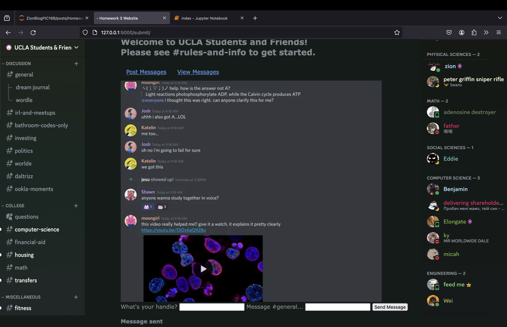

Introduction
Up until now, we’ve been creating programs that we run locally on our system, but often times when we interact with something on a computer, we do so thanks to something that someone else has made that we’ve acquired through the internet. Now, by making a website using HTML and CSS, we’ll do the same (in theory, anyway, since we won’t be publicly hosting our website, but you could if you wanted to). We’ll also put our code onto a GitHub repository so that anyone can play with it freely.
In this post, I’m going to create a simple website that gives the user the opportunity to send messages under a certain name or handle and will then be able to view such messages in a different page. The skeleton of the website will be designed via HTML templates, but we’ll be using a framework called Flask which allows us to write Python code specifically for our website, allowing us to incorporate more advanced techniques, including a SQL database which will contain users’ stored messages. Finally, we’ll also dabble a bit into CSS, which we can use to customize the look of our website, making it look like the popular messaging app Discord.
GitHub Repository
While I provide a tutorial to create everything from scratch, you are free to download my files for the project and experiment with them however you like:
https://github.com/torwar02/hw3
Everything necessary is in the primary folder called flask-project
Getting Started with Flask
Flask is a web development framework that we can use with Python as a programming language. As it is therefore somewhat external, we need to make sure to set it up correctly. The following link provides an excellent tutorial on how to get started. My examples are demonstrated on a Mac using Anaconda.
https://python-adv-web-apps.readthedocs.io/en/latest/flask.html
Essentially, there are two very important parts regarding the set-up. Firstly, if it’s your first time, you’re going to have to activate a virtual environment for Flask. Secondly, you’re going to have to use the command line to generate Flask projects.
Because of the environment provided by Professor Ko for PIC 16B, I was able to skip these steps, but you should see the section titled “Setup For Flask” at the link above. You need to create a directory for your Flask projects, create and activate the virtual directory, and lastly, install the Flask package for Python (otherwise you wouldn’t be able to get your files to interact with it!). The above link suggests using pip to install–please make sure that this is valid on your system as this is not recommended with Anaconda.
Creating a Flask Project
Once you have Flask installed, it’s time to actually create a project. We first need to set something up ourselves–make a folder, and give it an appropriate name (mine is simply called flask-project as it is unambiguous inside of my blog files), and using a text editor of your choice, create a new Python file, also giving it a sensible name (app.py). Then, in your command line, change the current directory to your project folder (using
cdand the appropriate folder name) and run the following command:
export FLASK_APP=app.pyThis lets Flask know that app.py is the sort of ‘master file’ that your web app is going to be based on. Otherwise, it wouldn’t know what to do! But we can’t actually run our website yet as we need to set up a few things in our file before we can even view anything. Inside of app.py, you should have the following:
import sqlite3
import pandas as pd
from flask import Flask, g, render_template, request
from flask import redirect, url_for
app = Flask(__name__)The import statements are nothing crazy, although it’s important to note that there are a lot of things that we have to retrieve from Flask itself, including Flask, which is necessary for making our website run, and render_template, without which we would not be able to view HTML files!
Finally, the line app = Flask(__name__) is what actually creates the file into something that Flask can interact with. This is essentially the skeleton of the website.
At this point, we can actually get our website to work with the command
flask runThough we won’t see our website because we haven’t put anything on it yet.
Project Overview
From this point on, this post will be divided into sections that correspond to different parts of our website that we need to put together, but before we can do that, we need to have an understanding of what we’re going to do.
Submission
Our website needs to have a page for the user to submit messages based on a handle of their choice. Below is a screenshot provided from the PIC 16B blog as an example:
Database Creation
We’re going to eventually want the user to be able to view past messages, but to do so, we’re going to have to store existing ones somehow. We will do this by creating a function within app.py that allows us to create and manipulate a SQL database (which is why earlier we imported sqlite3), which will later be retrieved by the website.
Message Viewing
Finally, we’re going to want to create an additional page so that users can look at previous messages that have been set. Per the specifications of this assignment, we’re going to want to display five randomly chosen messages out of the existing bank. We’ll have to make not only a new HTML page but also a function that allows us to retrieve the messages from the database.
With that overview out of the way, let’s get started!
Index Page/Submit
To specify a certain root on a website, we generally put slashes / after the url to indicate subpages. (For example, bruinlearn.ucla.edu/courses/[course number takes you to a Canvas page of a specific class). Thus, for the message submission page, I am going to want to add /submit. Note that when we host the website locally, we will always be viewing it with the “URL” localhost:5000 or http://127.0.0.1:5000/, which are only accessible from one’s own system.
With how I’m making the website, I really only want the user to interact with the message submission/viewing process, so the first thing that I’m going to do is to cause the page to redirect the user to the submission page. So, the first thing we’ll do is specify what happens when the user goes to the ‘raw’ (called ‘index’) URL and then what should appear (preliminarily) on the /submit/ page:
@app.route("/")
def redirect_page():
return redirect(url_for("submit"))
@app.route("/submit/", methods=['POST', 'GET'])
def submit():This seems a bit overwhelming. Let’s break it down. The @ operator in Python is called a decorator and is used to modify a function in the next line. We always modify the route method of app (which we made above), and the argument that we pass into route is a string containing the subdirectory on our page. For the ‘initial’ page we put just a slash. Below, we set it up for /submit/.
Then we define the Python function corresponding to our website. We can name it anything we want (it doesn’t necessarily have to be the same as the string in the decorator), but just make sure it’s a name that makes sense, becuase we’ll need to reference it. The body of the function should contain the Python code that we want to run for the website. On the first page, we use the function redirect to take us to /submit/. Notice that we use url_for and call this on the string "submit" which corresponds to the name of the function below.
In the next decorator, we also have an arugment called methods which contains a list ['POST', 'GET']. Don’t worry about this for now–this will come in handy when we need to make changes to the webpage. For now, we have nothing. If we generate the website via
run flaskand navigate to http://127.0.0.1:5000/ or localhost:5000
we’ll see a blank page with the subdirectory submit.
Body of /submit/
The following code won’t work because I show a function that we haven’t implemented yet (but will soon):
@app.route("/submit/", methods=['POST', 'GET'])
def submit():
if request.method == 'GET':
return render_template('submit.html')
else:
insert_message(request)
return render_template('submit.html', sec = True)You can think of request as the current page (remember Webscraping?) and the method as as the “state” of the website. GET is the state of the page when we arrive on the page. render_template is what allows us to take another HTML file and display it on the page, so we’re going to have to make a template called submit.html. If the method is post, we’re going to call a function called insert_message that will allow us to put messages on the message board, so we need to write that function as well. There’s a lot that we have to do to make it work! Let’s start with the Python functions, because otherwise we won’t be able to even display anything on our site.
get_message_db()
The function insert_message will place a message onto the current instance (request) of the website, via a SQL database, so first we need to make a function that simultaneously creates accesses the database (recall from the Week 1 post that .connect in sqlite3 can do both). To do this, we’ll make a function called get_message_db().
Here’s the function:
def get_message_db(): #create/access database
try:
return g.message_db #gets datbase from `g` object
except: #should only go through here once
g.message_db = sqlite3.connect("messages_db.sqlite") #makes database
cursor = g.message_db.cursor()
cmd = """
CREATE TABLE IF NOT EXISTS messages(
handle TEXT,
message TEXT
);
""" #creates table
cursor.execute(cmd)
cursor.close()
return g.message_db #then returns datbaaseWe do this with try and except statements because we would get an error if the database doesn’t exist. Most of this should be review from the Week 1 post, including the use of sqlite3.connect to make and then connect to a database, which we call messages_db. Our SQL query creates a table called messages using the CREATE TABLE IF NOT EXISTS command. We specify the name of each column (handle and message) as well as the data type (TEXT). We execute the command, close the cursor, and send back the database.
The only thing here that’s completely new is g, which is an attribute of app, that is, the file itself which comes with Flask. I am not well-versed enough in Flask to give an excellent explanation, but see this StackOverflow post for more info:
https://stackoverflow.com/questions/30514749/what-is-the-g-object-in-this-flask-code
Essentially, it’s a sort of global object in which we can store whatever we want while the app is running. This is important since it sort of lets us make global variables for any of the functions we create, which is why we decide to make our database equivalent to an attribute of g called message_db. Just note that this didn’t work (at least for me) until I imported g from Flask (which I had you do at the beginning).
insert_message()
This function is a bit hard to explain without the HTML template for /submit, but let’s walk through it:
def insert_message(request): #places messages into database
handle = request.form['handle'] #extracts `handle`/`message` from form
message = request.form['message']
db = get_message_db()
info = pd.DataFrame([{'handle': handle, 'message' : message}]) #places handle/message into df
info.to_sql("messages", db, if_exists = "append", index = False) #places into db
db.commit()
db.close()
return handle, message #sends back `handle` and `message` to `submit()`I’ll explain this later, but keep in mind that this function is called inside of the submit() function, so we should be thinking that we’re on the submission page. We’ll be grabbing user-inputted variables called message and handle (which will be part of the HTML code) and store them in the function. We then connect to the database using get_message_db(), create a one-row data frame called info containing the handle and the message, and append it onto the messages table in the database (once again, review Homework 1 post for details on the to_sql method from Pandas). Then, we commit the changes, lose the connection, and send back the handle and messages.
HTML Templates
Okay, so what are we actually going to show on the website? This is where templates come in handy. In the same folder that contains app.py, make a new folder called templates, and using a text editor, create two files: one called base.html, and another called submit.html. I’ve already referred to the latter, but base.html will work as a base that we modify on other pages.
base.html
The first thing that I wanted to remind you of is the fact that I wanted to make the webpage look like Discord, specifically, a Discord server used by UCLA students, which is why there’s referenced to this throughout the page:
<!doctype html>
<link rel="stylesheet" href="{{ url_for('static', filename='style.css') }}">
<title>{% block title %}{% endblock %} Fake Discord</title>
<nav>
<h1>Welcome to UCLA Students and Friends! <br>
Please see #rules-and-info to get started.
</h1>
<ul>
<li><a href="{{ url_for('submit') }}">Post Messages</a></li>
<li><a href="{{ url_for('view') }}">View Messages</a></li>
</ul>
</nav>
<img src = "https://cdn.discordapp.com/attachments/1186502778600820746/1204873997150453860/ChannelsSidebar.png?ex=65d6515a&is=65c3dc5a&hm=b906d75f0192467f2062c75eb343ba78f629fd8593afa5c781f067bc947f5514&" height = "800" width = "250" style="position:fixed; top:0px; left:0px">
<img src = "https://cdn.discordapp.com/attachments/1186502778600820746/1204873997460971582/UsersSiderbar.png?ex=65d6515a&is=65c3dc5a&hm=f1282537c4f4f000be28a42e583e212f1763294cfde93973c80297b84824a535&" height = "800" width = "250" style="position:fixed; top:0px; right:0px">
<section class="content">
<header>
{% block header %}{% endblock %}
</header>
{% block content %}{% endblock %}
</section>There’s a lot going on here, and I used the header from a Flask demo that our professor prepared for us as a template while adding my own contributions. We’ll walk through the major parts, but note that I don’t know a lot of the fine details regarding HTML–it’s important to keep in mind that by working with Python, Flask, CSS, and HTML, we’re using many different tools, and it’s unrealistic to be able to master all of them in a short period of time. I have referred to documentation when I was stuck, and I encourage you to do the same.
Firstly we write <!doctype html> to signal that this is an HTML document. The second statement connects it to the file that we’ll look at later which incorporates our CSS settings.
<img>
Now, I want to place images on either side to pretend that we’re on Discord. I took screenshots from a Discord server and uploaded them onto Discord itself since I frequently use it to store image links. I couldn’t get this to work by storing the images locally, otherwise I would have. Each <img> is made of various attributes: src tells us where to get it from (in our case, a URL), whereas height and width control the dimensions. style can be used to control where the image is placed on the page. I want them to look like sidebars, so I set the position to fixed and specify how many pixels from the page’s top, left, or right I want the image. This site was very helpful:
https://www.w3schools.com/html/html_images.asp
<section>
We use this tag to create concrete sections of a document. For base.html, there really shouldn’t be much here, since all we want to be constant is the navigation and images. Note that we can give it a class type of content , and inside, we use syntax from Jinja, which helps us code certain Python functionalities into HTML pages: we enclose these statements with a curly brace and percent sign, and inside, we put instructions. Here we create header and content blocks. In this case, they’re just markers–when we reference base.html in our other templates, we can specify what we want to put in here. base.html just provides a framework.
submit.html
With base.html out of the way, let’s look at what we really wanted to see–the layout of the submit page. It’s actually simpler than you might think, thanks to the fact that submit() in app.py does a lot of the hard work:
{% extends 'base.html' %}
{% block content %}
<img src ="https://cdn.discordapp.com/attachments/360940494240350209/1204479028057215056/discordchatting.png?ex=65d4e182&is=65c26c82&hm=922db462e88ad85c31db7b07af6a11855da471687480209a70b96cf82fd57720&">
<form method="post">
<label for="handle">What's your handle?</label>
<input name="handle" id="handle">
<label for="message">Message #general...</label>
<input type = "text" name="message" id="message">
<input type="submit" value="Send Message">
</form>
{% if sec == True %}
<br>
<b>Message sent</b>
{% endif %}
{% endblock %}Jinja syntax
The first thing we do is to extend base.html–that is, to essentially place this template’s code within that file. We then specify what we want in the content block which we left empty in base.html.
The first thing we do is place an image that simulates a chat in a Disord channel, which we’ve talked about already. Then, however, we input a form with method post
<form> and submit()
This is where it’s crucial to understand how submit.html interacts with app.py. Essentially, we want to create a tag of type <form> which allows for user input on the site. We specify that it has a method called post–the same post as we saw in the arguments of submit(). The method on the page when we first arrive is get (not listed), but it will be updated to post once the user interacts with the text box, We create labels for the two text boxes (<label>) which we specify are for two variables called handle and message–the two things we wanted to place in messages_db.sqlite. We then create two different tags of type <input> which are the text boxes for the above variables, and finally, a submission button which we get as specifying the type for <input> as submit. Then, we end the form.
render_template()
Back in the body for submit() in app.py, we see that we call the function render_template() on submit.html. This causes the template we’ve made above to be displayed and prompts the user for input, setting the method to post. Notice that this submission triggers the body of the else part of the conditional statement, which calls insert_message() on request (recall that request refers to what’s available on the current page). Recall that insert_message() starts as such:
def insert_message(request):
message = request.form['message']
handle = request.form['handle']In other words, we grab the message and handle variables from the form of submit.html. This is how we are able to get Python to interact with the website through Flask in order to store the messages!
At the end of the else statement, we render the page once again but with sec set to True. We are allowed to input parameters into our function so long as they correspond with Jinja syntax. Returning to submit.html, we see that we have a statement {% if sec == True %}, which corresponds to such a variable. When the condition is satisfied, we create a line break <br> and display a message saying Message sent, after which we close the conditional statement and the block in general. Here’s what the website looks like when the user is submitting a message!
This image shows a user typing a message into the message form:
This one shows the submission message:

View
With the submit page completed, it’s time for us to be able to view our messages. Our overall goal here is to grab 5 random messages from messages_db.sqlite that we’ve inserted using insert_messages(). Let’s go over this first.
random_messages()
All we essentially need from this function is to return 5 rows from the database in a way that can be read by Python. Look at the following code:
def random_messages(n):
db = get_message_db()
cmd = f""" SELECT * FROM messages ORDER BY RANDOM() LIMIT {n}; """
postings = pd.read_sql_query(cmd, db)
db.close()
return postingsIn general, we allow for any number of random messages, though I specify 5 in view.html (thus, this can be changed by the user), hence the SQL query we execute will be in the form of an f string. Thanks to the following StackOverflow post provided by Professor Ko, we’re able to easily write the query:
https://stackoverflow.com/questions/2279706/select-random-row-from-a-sqlite-table
Essentially, * refers to selecting everything, ORDER BY sorts the table, and we do so with a function in SQL called RANDOM(). Finally, LIMIT specifies the number of rows we want back hence, n.
We then use the read_sql_query command from pandas alongside the database connection created by using get_message_db, we close the connection, and then we return the rows that we get back. Recall from the post on `sqlite that this will be in the form of a data frame.
view()
Now that we have a function that can fetch items from the database, we’re going to need a function responsible for viewing our page, which we call view in app.py. As we did with submit(), we will need to return a render_template() statement in order to make the changes meaningful on the page. Here’s the code:
@app.route("/view/")
def view(): #For viewing messages
postings = random_messages(5) #Get 5 random messages from database
length = 5
message_tuples = []
for i in range(length):
message_tuples.append(tuple(postings.iloc[i,:])) #Convert df rows into tuples
return render_template('view.html', message_tuples = message_tuples) #display `view`Firstly, we call the random_messages() function with n = 5, and then, we create a list that will contain tuples from the postings data frame, which will make it easier to interface with Jinja in view.html. Using a for loop, we add the handle and message as a tuple into the list by using the .iloc method to fetch what’s in each row.
Then, we return render_template on view.html with an argument called message_tuples set equal to, well, message_tuples, which will be a variable that we place inside of the Jinja syntax.
view.html
Just like with submit.html, this part is quite simple:
{% extends 'base.html' %}
{% block header %}
<h1>{% block title %}#general{% endblock %}</h1>
{% endblock %}
{% block content %}
{% for tuple in message_tuples%}
<h4>{{tuple[0]}}</h4>
<p>{{tuple[1]}}</p>
<br>
{% endfor %}
{% endblock %}We once again extend base.html to add onto what we already have. In the header block, we place a title with the text #general (as is common on Discord servers).
Then in the content block, we create a for loop in Jinja in order to print out precisely the messages that we had placed as tuples in message_tuples in view() from app.py. This loop first prints out the handle (which is the element at the 0th index) as an <h4> (header 4) while the actual message is simply kept as a paragraph (~normal text) <p>. This has the effect of highlighting the name in larger text, creating a slight break, and then putting the message in smaller text, which is more reminiscent of Discord’s actual appearance. Then, we place a line break after each message so that they aren’t directly on top of each other, and then we end the for loop and block.
Here’s an image showing the view page with the message we sent earlier:
CSS
If you were to run the website now, it would look incomplete–although all of the images and functionalities would be present, the website would look, unfortunately, as if it were made in 1995. We can make our site look a lot cleaner using a language called CSS (cascading style sheets) that will specify the visual elements. To do this, please revert to the folder with your Flask project, make a new folder called static, and inside, create a file called style.css using a text editor (recall that base.html refers to this file).
CSS Syntax
The syntax for CSS, at least in terms of what we’re using it for, is quite simple and follows a general pattern
tag {
aspect_1: value_2;
aspect_2: value_2;
.
.
.
}That is, we specify what specific tags that we want to modify in our document, and then we specify different characteristics (color, margin, etc.), a colon :, and then some sort of appropriate value, ended with a semicolon.
html
The first aspect of our site for which we will specify anything is simply called html and is related to aspects of the entire html document. Here, we’ll control the font and the background color as such:
html {
font-family: Verdana;
background: #121b18;
}You can look up fonts online that are compatible–I went on this site (https://www.w3schools.com/css/css_font.asp) to see which ones were available without any modifications. I picked Verdana because it’s a sans-serif font.
We also change the background color via background with a hexadecimal color value. I took a screenshot of the Discord app and used an online color picker (https://imagecolorpicker.com/en) to grab the hex value of the background.
Text specifications
There are a few types of text tags that we use throughout our site. We’re going to change them one by one but largely apply the same ideas.
html {
font-family: Verdana;
background: #121b18;
}
body {
color: #81888e;
max-width: 900px;
margin-left: 350px;
}
h4 {
color: #89cff0;
margin: 1rem 0;
text-align: left;
}
h1 {
color: #81888e;
margin: 1rem 0;
text-align: left;
}
p {
color: #ffffff;
margin: 1rem 0;
text-align: left;
}
label {
color: #81888e;
}The only parts that require a lot of explanation above are the margin attributes. These were largely copied from a CSS markup example that was given to us. Please visit the following website and the section on “Margin - Shorthand Property” for a detailed explanation https://www.w3schools.com/css/css_margin.asp – essentially, the first number refers to the amount of space given from the top and the second refers to the space from the right. rem is a unit that takes into account font sizes: https://www.sitepoint.com/understanding-and-using-rem-units-in-css/
I set some of these settings to what they are because otherwise the page wouldn’t look right–it’s not common for a lot of trial and error to be necessary for this sort of process.
Other Specifications
There are a few other CSS settings that I’ve tweaked:
a {
color: CornflowerBlue;
}
nav ul {
display: flex;
list-style: none;
margin: 0;
padding: 0;
}
nav ul li a {
display: block;
padding: 1rem;
}The template I got this from set the link (that is, a) color to cornflower blue, which I really like. We also specify the settings for the unordered list <ul> and the list item links <li> in base.html. The settings in nav ul I also took from the template that we had, but I like how they look– display: none makes it so that they’re side-by-side, list-style: none removes bullet points, and the margin and padding keep them adequately spaced. I discovered what these things do by seeing what happened to the website when I tweaked the settings.
Similarly, for nav ul li a, we use block for display to place some space between the <nav> and the body below, and we also use some padding.
Below we can see where each CSS element corresponds to on the webpages:
Thanks for reading my post :3